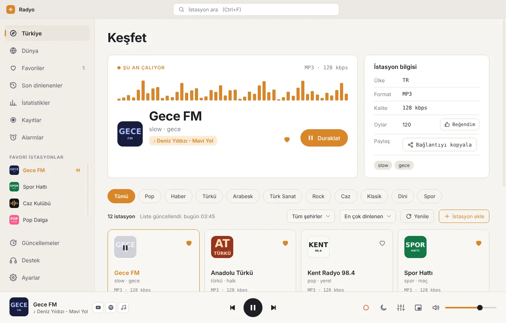
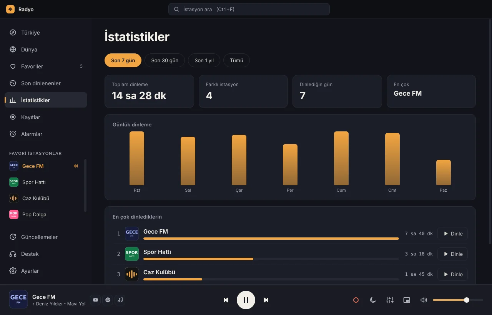
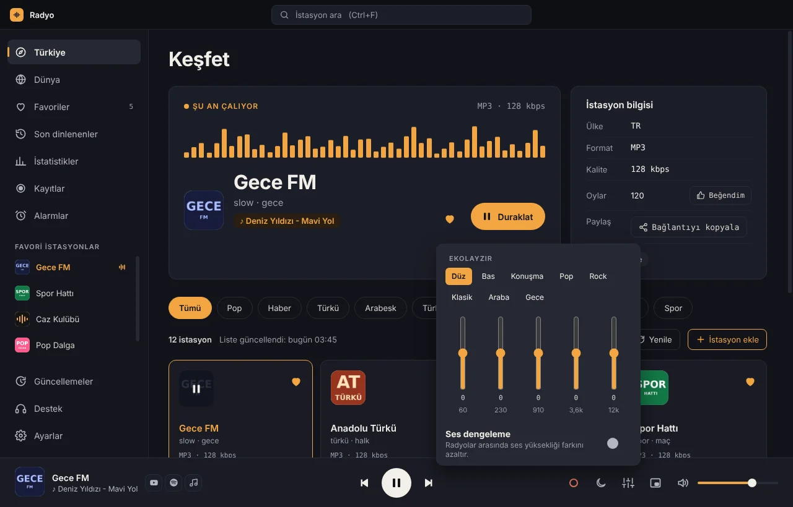

Bütün radyolar tek uygulamada.
Türkiye’deki ve dünyadaki binlerce radyoyu tek tıkla dinle. Çalan şarkının adını gör, yayını kaydet, sabahları radyoyla uyan. Windows için hafif ve sade bir uygulama.

Radyo dinlemenin rahat hâli
Tarayıcıda sekme sekme radyo aramaya son. İhtiyacın olan her şey tek pencerede.
Binlerce radyo
Türkiye’nin bütün radyoları; dünyadakiler de dile ya da ülkeye göre. Şehre ve türe göre süz, adıyla ara.
Şarkıyı bul
Çalan şarkının adı görünür; tek tıkla YouTube’da ya da Spotify’da açılır. Son çalanlar da kayıtlı.
Yayın kaydı
Sevdiğin programı kaydet, ya da saatini kur kendiliğinden kaydetsin. Şarkı listesiyle birlikte.
Radyolu alarm
Sabahları sevdiğin radyoyla uyan; ses bir dakikada yavaşça yükselir. Uyku zamanlayıcısı da var.
Ekolayzır ve ses dengeleme
Bas, konuşma, araba gibi hazır ayarlar. Radyo değiştirince ses bir bağırıp bir fısıldamaz.
Mini oynatıcı
Hep üstte duran küçük pencere; pencereyi kapatınca da saatin yanından çalmaya devam eder.
Favoriler ve klasörler
Favorilerini klasörlere ayır, sürükleyerek sırala. Bulut klasörüyle bilgisayarlar arasında eşitle.
Kopmayan yayın
Bağlantı giderse kendiliğinden yeniden bağlanır. Güncellemeler uygulamanın içinden, birkaç saniyede gelir.
İstatistikler
Bu hafta ne kadar dinledin, en çok neyi dinledin? Hepsi bilgisayarında kalır, hiçbir yere gönderilmez.
Göz yormayan tasarım
Koyu ya da açık tema; Windows’un temasına da uyabilir. Türkçe ve İngilizce.




Kurulum bir dakika
Yönetici izni gerekmez; uygulama yalnızca senin kullanıcı hesabına kurulur.
İndir
Yukarıdaki “Windows için indir” düğmesiyle Radyo-Setup.exe dosyasını indir.
Kur
Dosyayı aç, kurulum klasörünü onayla. Masaüstüne ve Başlat menüsüne kısayol eklenir.
Dinle
Radyo açılır, istasyon listesi kendiliğinden iner. Bir karta tıkla, gerisi kendiliğinden.
“Windows bilgisayarınızı korudu” uyarısı çıkarsa: “Ek bilgi”ye, sonra “Yine de çalıştır”a tıkla. Uygulama henüz dijital olarak imzalanmadığı için Windows yeni programlarda bu uyarıyı gösterir.
Sık sorulanlar
Ücretli mi, reklam var mı?
Hayır. Radyo tamamen ücretsiz ve reklamsız. Radyoların kendi yayınlarındaki reklamlar elbette yayının parçası.
Radyo listesi nereden geliyor?
İstasyonlar, gönüllülerin oluşturduğu ücretsiz Radio Browser veritabanından gelir ve her gün güncellenir. Eksik ya da çalışmayan bir radyo görürsen uygulamadaki “Çalışmıyor, bildir” düğmesiyle haber verebilirsin.
Güncellemeleri nasıl alırım?
Uygulama yeni sürümü kendisi bulur ve indirir; “Yeniden başlat ve güncelle”ye basman yeterli. Favorilerin, kayıtların ve ayarların olduğu gibi kalır.
Bilgilerim bir yere gönderiliyor mu?
Hayır. Favoriler, geçmiş ve istatistikler yalnızca senin bilgisayarında tutulur. Eşitlemeyi açarsan, yalnızca senin seçtiğin bulut klasörüne yazılır.
Mac ya da telefon sürümü var mı?
Şimdilik yalnızca Windows. Telefon sürümü planlanıyor.